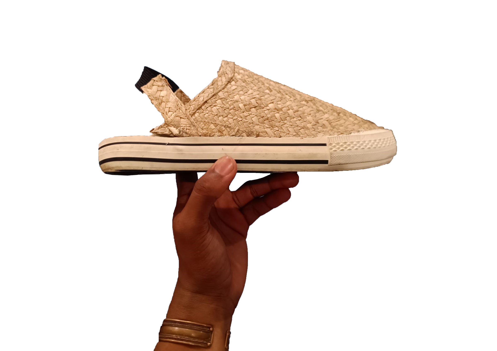

Stage · Atelier « Le Paradis du Bakoua » · Martinique
BAK-SHOES

Durant un stage en Martinique, j'ai réalisé un projet au sein de l'atelier de tressage « Le Paradis du Bakoua ».
Le Paradis du Bakoua est un atelier qui perpétue une technique artisanale : le tressage du bakoua. Sandra Marie-Louise a créé cet atelier il y a plus de douze ans pour préserver le patrimoine martiniquais. Elle crée principalement des chapeaux et des accessoires en bakoua tressé.
Face à la pollution des matières artificielles, je souhaite explorer cette matière dans d'autres objets, afin d'offrir des alternatives durables et biodégradables.
Aujourd'hui, les baskets font partie intégrante de notre vie quotidienne. Le plus souvent, elles sont fabriquées avec des matériaux polluants et difficilement renouvelables.
Le bakoua peut-il devenir une nouvelle ressource renouvelable dans la production de chaussures locales ?
